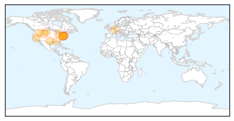

30 Day Trends
Web: 4 alerts, 13 warnings
Twitter: 2 alerts, 0 warnings
Top Articles:
- 0.998
- Governor Markell Reminds All Delawareans to Get a Flu Vaccination
- 0.997
- Enterovirus cases in N.D. declining
- 0.991
- Physicians see overwhelming number of patients with flu-like sym
- 0.990
- Five things to know about Enterovirus D68
- 0.988
- Views on giving flu shot to younger children
- 0.971
- WBOC-TV 16, Delmarvas News Leader, FOX 21 -
- 0.958
- Maryland Reports First Seasonal Flu Case
- 0.932
- Visiting Nurse Association of Northern New Jersey Announces Community Flu Clinics
- 0.928
- Escambia County Child Contracts Enterovirus D68; Child Attends Santa Rosa School
- 0.917
- Idaho Records First 2 Deaths of Flu Season
- 0.894
- Computerized surveillance system quickly detects disease outbreaks among preschoolers
- 0.886
- Get vaccinated before flu gets you
- 0.822
- School Flu Preparation
- 0.717
- Researchers describe how lungs stand guard against the flu
- 0.505
- When should you choose the ER over walk-in care?
Top Tweets:
-
No tweets found for Oct 10, 2014
Web/News Articles

Tweets

Article Locations
Article Confidences